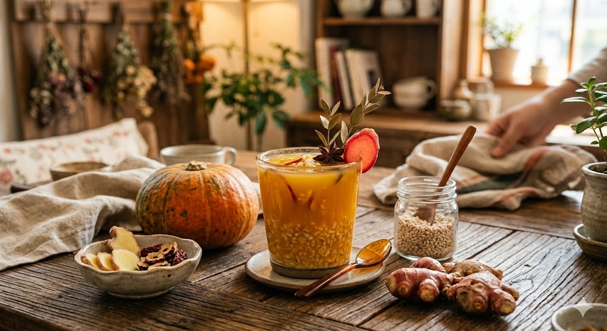
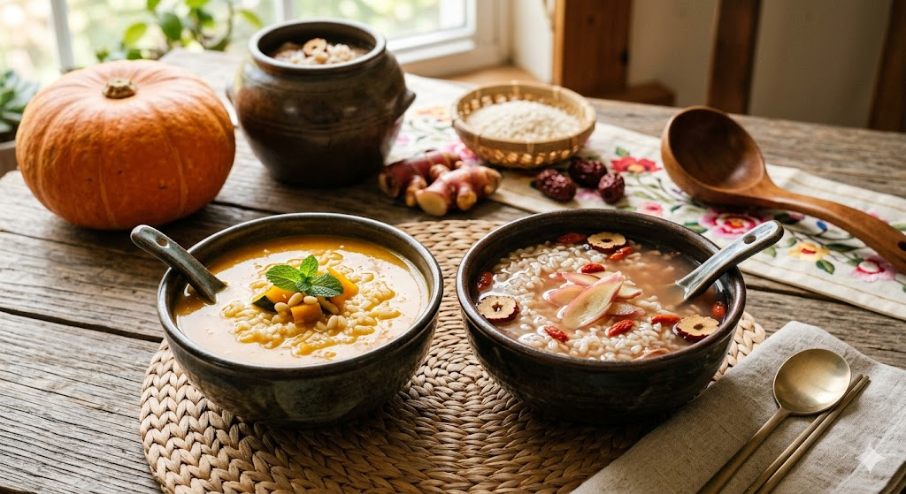

Pada penelitian ini penulis memilih untuk membuat sikhye dengan 2 jenis variabel yang
berbeda, yaitu dengan menggunakan labu kuning dan jahe merah. Penulis memilih untuk
membuat produk fermentasi sikhye karena penulis ingin memanfaatkan bahan alami yang
bernutrisi, serta bisa menghasilkan suatu produk fermentasi yang bermanfaat bagi tubuh
manusia hanya dengan menggunakan bahan yang sederhana.

1. Rendam tepung ragi dalam air dingin sebanyak 2~3 liter sampai warna air menjadi putih seperti susu
2. Peras berkali-laki lalu disaring
3. Labu kuning dikupas lalu di potong menjadi 8 potongan kecil dan direbus. Kemudian dihancurkan dengan air yang dipakai waktu merebus labu dan disaring
4. Campurkan air yang diperoleh pada nomor 3 dengan air lagi yang diperoleh pada nomor 1 dan 2
5. Tanak nasi
6. Masukkan air ragi ke dalam nasi di rice cooker
7. Diamkan selam 10 jam hingga nasi terapung di atas air dengan mempertahankan suhu rice cooker sekitar 60 derajat
8. Pindahkan ke panci besar lalu masukkan gula pasir
9. Didihkan selama 20~30 menit di atas api kecil
10. Diamkan di kulkas selama 2-3 hari
11. Analisis karakteristik hasil fermentasi minuman sikhye kepada 10 responden
1. Rendam tepung ragi dalam air dingin sebanyak 2~3 liter sampai warna air menjadi putih seperti susu
2. Peras berkali-laki lalu disaring
3. Jahe merah dikupas lalu direbus. Kemudian diparut dan campurkan dengan air yang dipakai waktu merebus jahe dan disaring
4. Campurkan air yang diperoleh pada nomor 3 dengan air lagi yang diperoleh pada nomor 1 dan 2
5. Tanak nasi
6. Masukkan air ragi ke dalam nasi di rice cooker
7. Diamkan selama 10 jam hingga nasi terapung di atas air dengan mempertahankan suhu rice cooker sekitar 60 derajat
8. Pindahkan ke panci besar lalu masukkan gula pasir
9. Didihkan selama 20~30 menit di atas api kecil
10. Diamkan di kulkas selama 2-3 hari
11. Analisis karakteristik hasil fermentasi minuman sikhye kepada 10 responden